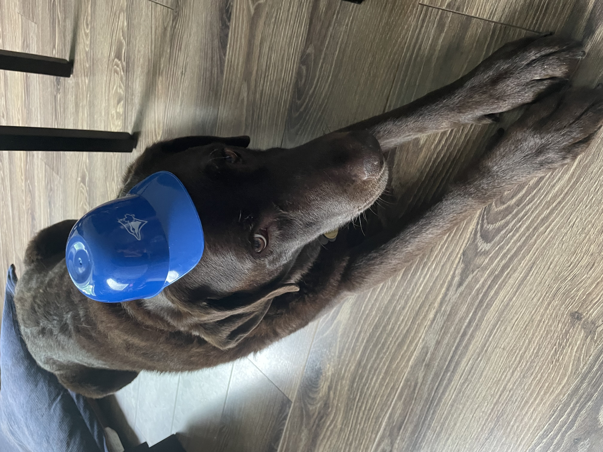

Bonjour je m'appelle Moka. Je suis une chienne et ma race est labrador brun.J'ai été adopter par la famille Pilon-Lemieux
quand j'aivais 4 mois. Avant je vivais dans un élevage de chiot et étais la plus énergétique de mon groupes.
Bien que j'aille beaucoups d'energie, je ne jappe jamais sauf après des bulles, la perche piscine et la balayeuse.
En été j'aime beaucoup me baigner dans ma petite piscine et en hiver j'aime beaucoup jouer dans la neige avec ma famille.